How to setup the rendering of the website¶
This repository automatically deploys a nicely rendered website upon each change.
Step 1: Setup deploy branch gh-pages¶
To set this up, we need to click 10x and type 8 characters.
- At the GitHub repository page, click 'Settings'
Where is that?
'Settings' is found at the top-left of the screen
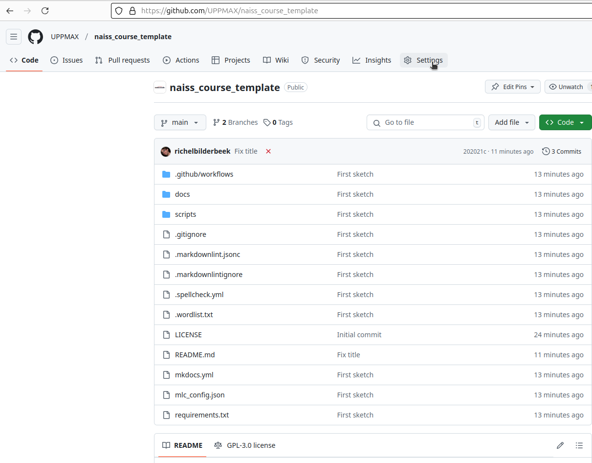
I do not see 'Settings'
This means you do not have the access rights to do so.
- In the 'Settings' menu, click 'Pages'
Where is that?
'Pages' is found at the left menu list
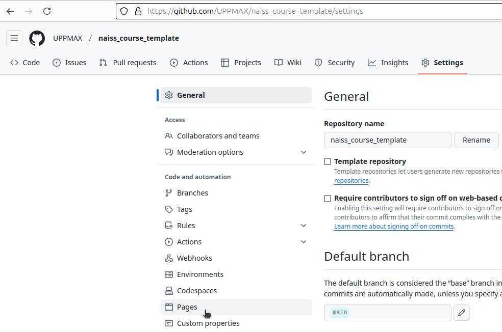
- In the 'Pages' menu, click 'Branch'
Where is that?
'Branch' is found at the top of the page.
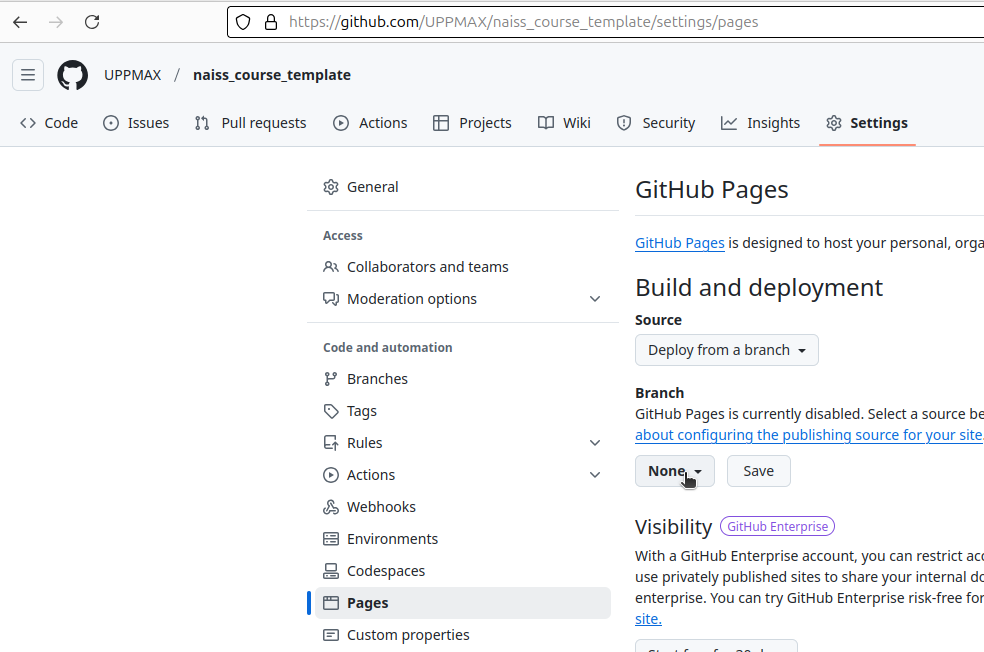
- Try to change the branch to
gh-pagesand fail: it will probably say 'No results found'
How does that look like?
Here the branch gh-pages cannot be found:
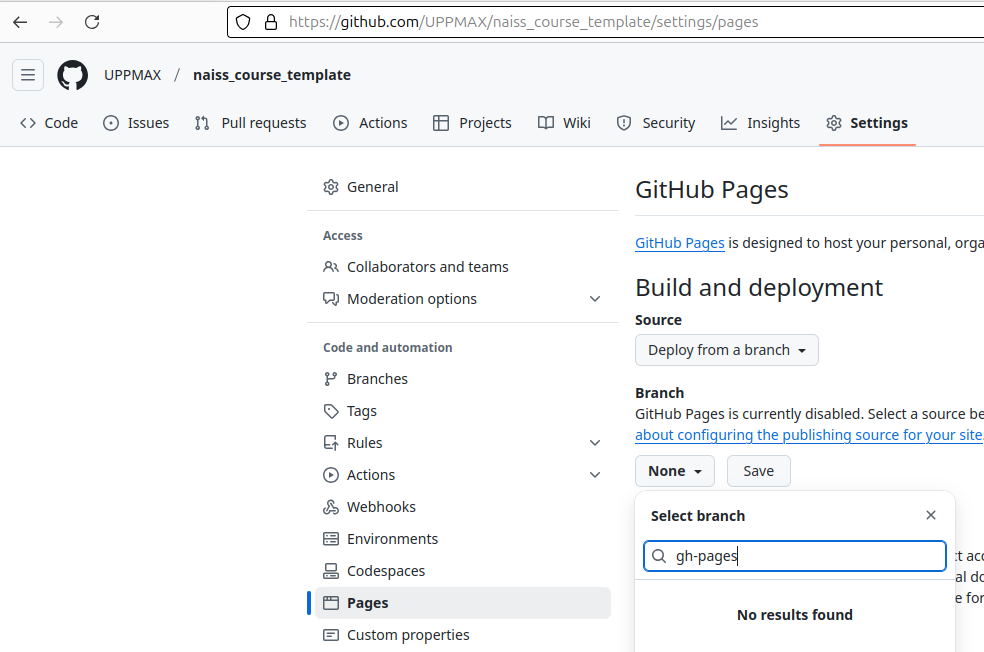
- At the main page of the repository, click on the combobox
of which branch is actively displayed.
It will likely display the word
main
How does that look like?
Here is the combobox of the actively displayed branch:
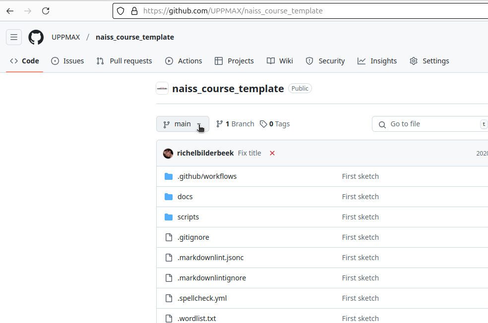
- Click on the empty edit line above the branch(es) to edit it
How does that look like?
The empty edit line above the branch main:
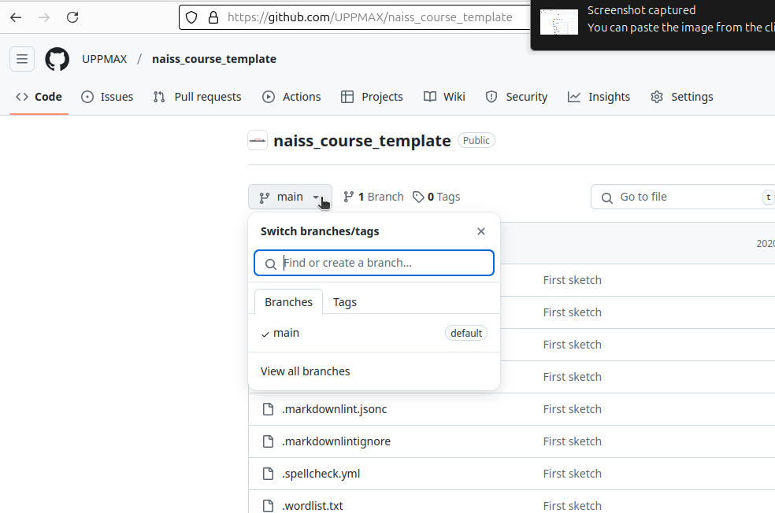
- Type the word
gh-pages
How does that look like?
The word gh-pages has been typed.
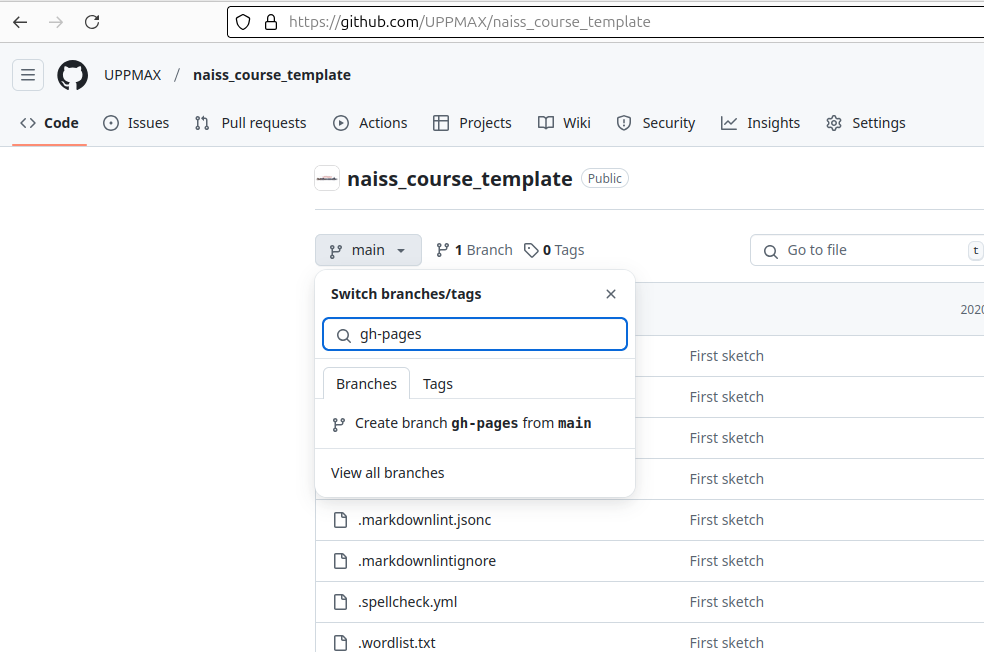
- Click on 'Create branch
gh-pagesfrommain
How does that look like?
Click on 'Create branch gh-pages from main.
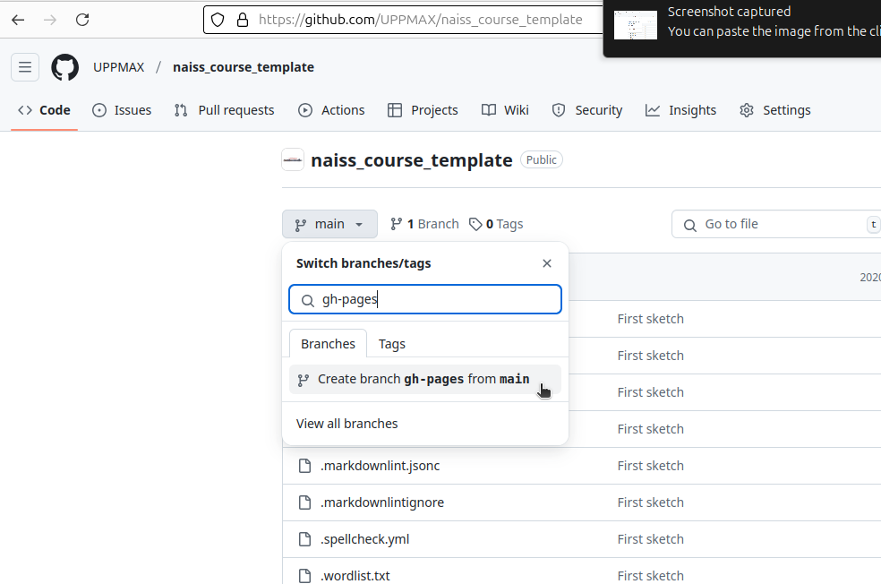
- Go to 'Settings | Pages' and observe that
gh-pagesis now there
How does that look like?
The 'Pages' page shows that gh-pages is used.
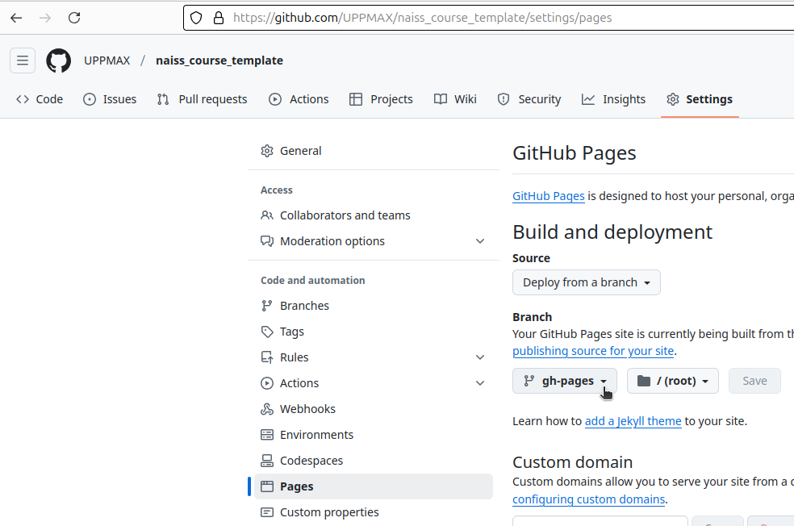
Step 2: allow a bot to deploy¶
- In the 'Settings' tab, click 'Actions'
How does that look like?
Click on 'Actions'
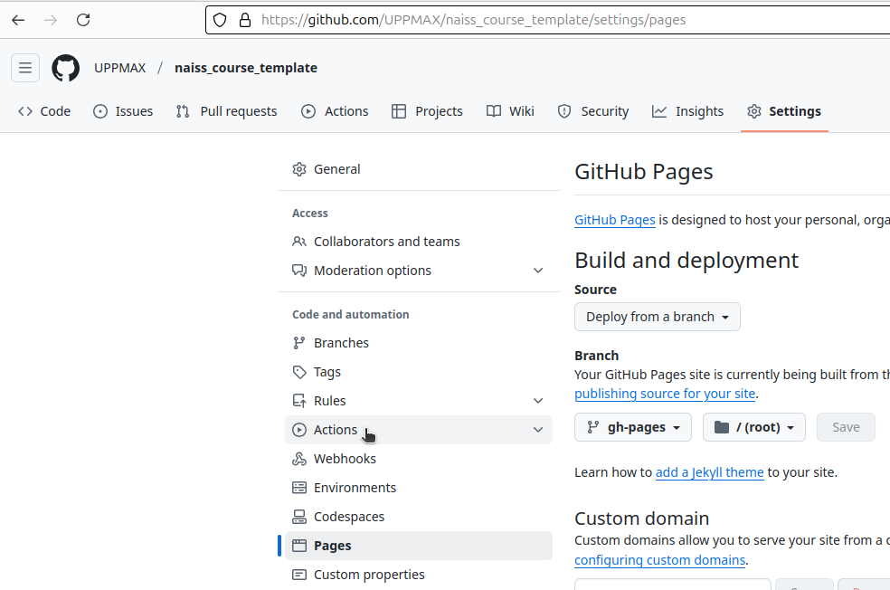
- In the 'Settings | Actions' menu dropdown item, click 'General' to go the general Actions setting.
Where do I click?
Click on 'General'
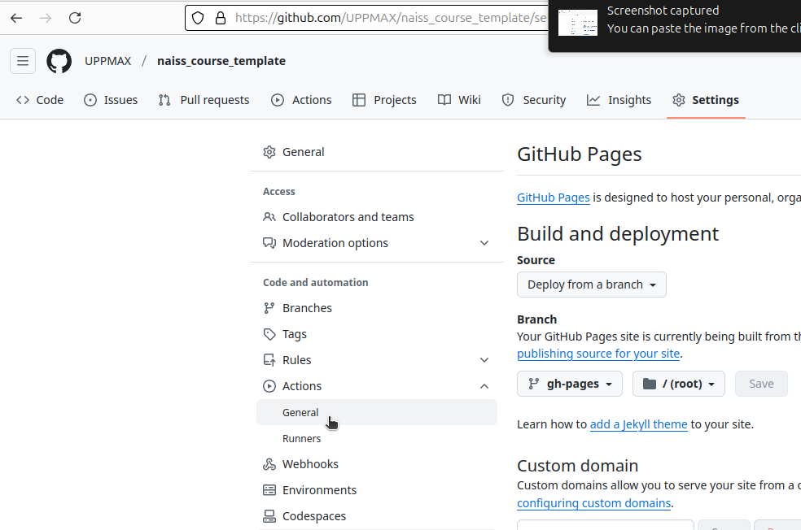
How does that look like?
The general Actions settings look like this.
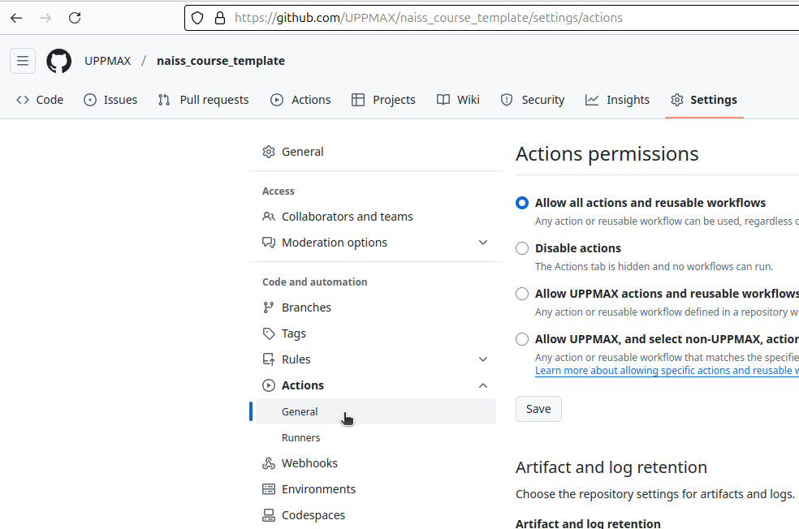
- Scroll down to 'Workflow permissions'. Click on 'Read and write'.
Where do I click?
Click on 'Read and write'.
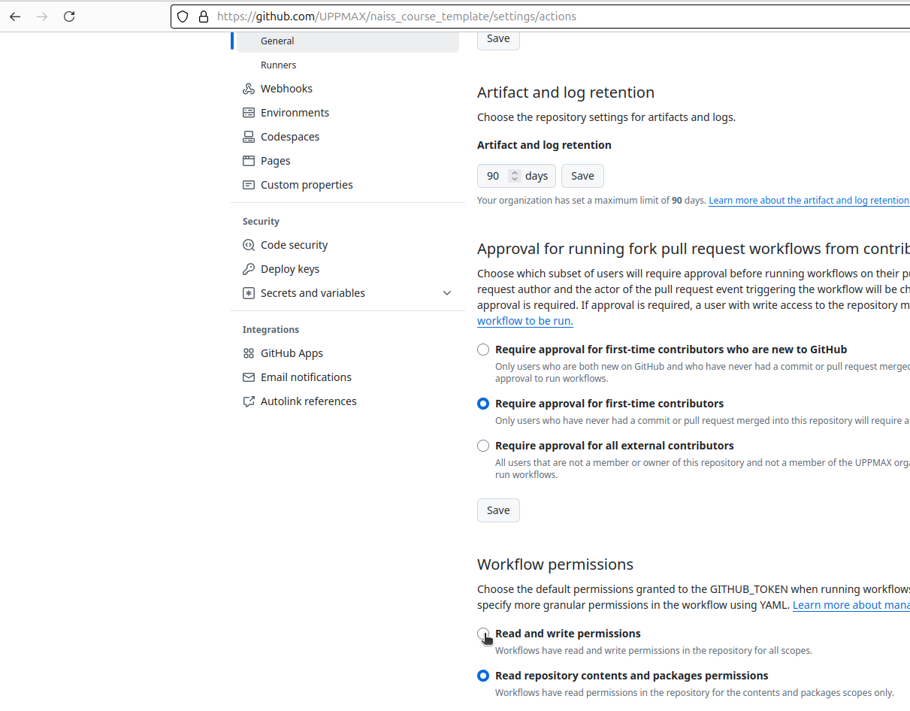
How does that look like?
Clicked on 'Read and write'.
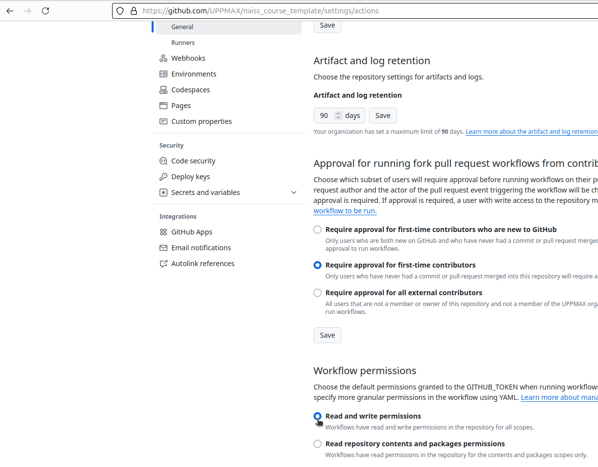
actions_setting_workflow_permissions_clicked_read_and_write.png
Done!
Next time when there is a change in the repository, the nicely rendered website is deployed automatically.